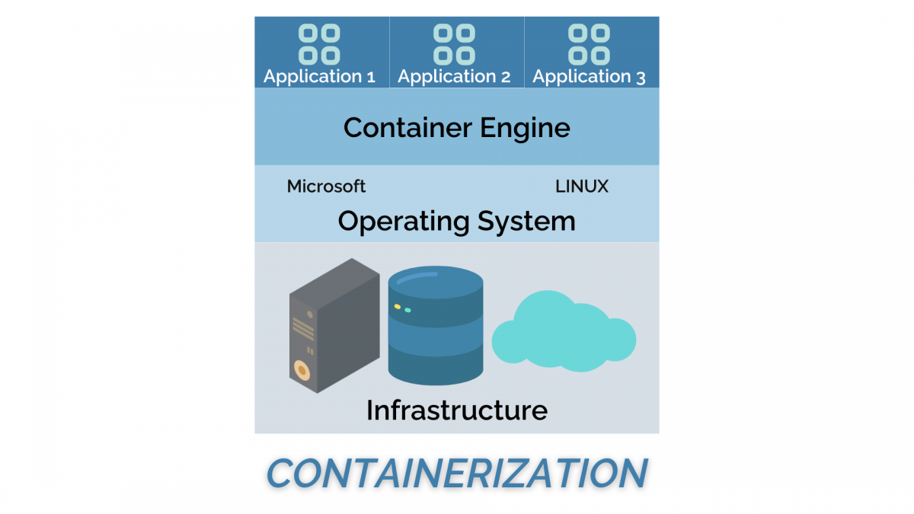

Deploy your code¶
Questions
- How to make your program work for others?
Learning outcomes of 'Deployment'
- I can mentalize the installation needs from the users' perspective
- I can evaluate different available tools for reproducibility and installations
- I can make an installation instruction for potential users
Content
- We will prepare for installation of your code
- But also...
- some theory of packages
- some theory of workflows
- some theory of containers
- get some hands on
Instructor notes
Prerequisites are:
- ...
Lesson Plan: FIX
- Total 30 min
- Theory 20
- Discussions 10 min
TOC
- Overview
- Recording dependencies
- workflows
- containers
Introduction¶
- It's about Distribution!
Note
- Many projects/scripts start as something for personal use, but expands to be distributed.
- Let's start in that end and be prepared.
- The following steps can be very valuable for you in a couple of months as well as you revisit your code and don't know what it does or why you did this and that.
Attention
- Make your program or workflow works for others and yourself in the future.
Recording dependencies¶
- Reproducibility: We can control our code but how can we control dependencies?
- 10-year challenge: Try to build/run your own code that you have created 10 (or less) years ago. Will your code from today work in 5 years if you don’t change it?
- Dependency hell: Different codes on the same environment can have conflicting dependencies.
To make sure about needed dependencies¶
- Start with empty environment
- Nowadays platforms are less important, still "system files" may differ among OS platforms and Linux distributions
- will your program require specific "system files"
- are these typically not installed already?
- in the best world test on Windows/Mac and Linux platforms
- and with as empty as possible environment
- What about Shared services like a cluster where users and most staff do not have writing privileges ('sudo' rights) for system installations?
Discussion: Where do you run your program?
- From a terminal?
- On different computers?
- On a cluster?
- We need to either inform what is needed to run the software in the README file
- Or provide them with everything needed
- hopefully not interfering with other software they are using
Ways to distribute
- Python packages:
- pip (PyPI)
- conda
- R:
- R repos like CRAN and GitHub (devtools)
- conda
- Compiled languages:
- built binaries (platform specific)
- install from source
- manual
- make
- CMake
- General tools
- Containers
Conda, pip¶
These Python-related tools try to solve the following problems:
- Defining a specific set of dependencies, possibly with well-defined versions
- requirements.txt...
- Installing those dependencies mostly automatically
- Recording the versions for all dependencies
-
Isolated environments (venv, virtualenv)
- On your computer for projects so they can use different software.
- Isolate environments on computers with many users (and allow self-installations)
- Using different Python/R versions per project??
- Provide tools and services to share packages
-
Let's focus here on PyPI!
- Remember we made a package this morning!
- We'll cover the other tools after the exercise.
Principle using python pip in a virtual environment¶
- We can make other users aware of the dependencies for our Python project.
- One can state those specifically as a list in a README
- Or, we can make a ready file (in python)
Save your requirements as a file
- You may have developed your Python program with your existing python modules environment. You may have installed some new packages during the development but did not track it in a good way.
- We need to identify what python packages a user (or you on another computer) will need, to make the program work!
- There are many packages distributed in the "base" installation of Python so it is not just to look at the import lines in the code.
- You may also be hard to get an overview because you have too many import lines, also distributed among files if you worked in a modular way
-
So here are some steps:
-
Start a python virtual environment.
- you can do this outside the git repo to not pollute it
- This creates an empty virtual environment located in
<path>/usertestdirectory - Activate
- In Windows you may have to instead do:
- Note the
(usertest)in the beginning of the prompt! - Do note the python version and you may inform users that you know that this version is known to work!
which python #must point to the python belonging to the virtual environment
python -V # note this version
which pip #must point to the pip belonging to the virtual environment
- You can switch to the directory where you have your code and test to run it
- It may give you errors of missing packages, like
numpy - Install them with
- No need to use ´´--user``, since it will be installed in the virtual environment only.
- Do this until your program works
- Check what is installed by:
-
You will probably recognise some of them, but some may be more obscure and were installed automatically as dependencies.
-
Save your requirements as a file that user can run to get the needed dependencies
- Other users can then install the same packages with:
- End the isolated environment and work with other things!
Example
README: installation section¶
Let's take a look at different READMEs
- Also interesting: Is there any test that makes sure it is correctly installed?
Example
- R: https://github.com/KamilSJaron/smudgeplot/tree/v0.3.0?tab=readme-ov-file#install-the-whole-thing
- Conda: https://github.com/biobakery/MetaPhlAn
- pip: https://github.com/deeptools/HiCExplorer
- pip: https://github.com/caleblareau/mgatk?tab=readme-ov-file
- binaries/executable: https://github.com/dougspeed/LDAK?tab=readme-ov-file#how-to-obtain-ldak
Exercises 20-30 min¶
- We already have a file called
README.md, that is used for information for the course participants. - Let's work with a README file for potential users. We can call it
README-EXT.md
Intro
- (External) Users should be able to install the the complete tool, including dependencies:
. Repo work
- work on GitHub!
- When modifying repo, use a group specific branch
- When done, merge
- In the end we do code review together of the merging conflicts
Hints
- The main program
main.pyis in the repo. bacsimis a python package needed bymain.py- available here: https://test.pypi.org/project/bacsim/1.0.1/
(In groups) Will people need any additional packages for this tool?
- Test in isolated environment (
venv) on local computer if there are errors - That is, are there any more packages needed
- follow the example above
(In groups) Make a 'requirements.txt' file (if needed)
- each group in different branches
- then merge and teacher does code review
(In groups) Make 'installation instruction' in groups
- each group in different branches
- then merge and teacher does code review
Going further with deployment¶
-
Possibilities for other languages can be
- C/C+
- CMake
- Conda
- Fortran
- Fortran package manager
- Julia
- Pkg.jl
- C/C+
Course advertisement Python for scientific computing
Containers¶
-
Containers let you install programs without needing to think about the computer environment, like
- operative system
- dependencies (libraries and other programs) with correct versions

From Nextlabs
Info
-
2(3) types
- Singularity/Apptainer perfect for HPC systems
-
Docker that does not work on HPC-systems
- But docker images can be used by Singularity and Apptainer
-
Everything is included
-
Workflow:
- Download on Rackham or local computer
- Transfer to Bianca
- Move to from wharf to any place in your working folders on Bianca
-
Draw-backs
- you install also things that may be already installed
- therefore, probably more disk space is needed
Workflows¶
See also
Learn more Workflow management by CodeRefinery Snakemake by CodeRefinery
Make a file executable by its own¶
-
Run a python script without the
pythonbefore! -
This line helps in the top of the main script:
- Then the python active in "PATH" will automatically be used
- especially important on a shared system where python is not in the typical "/usr/bin/python" path.
Compiled languages¶
Ignoring files and paths with .gitignore¶
Compiled and generated files are not committed to version control. There are many reasons for this:
- Your code could be run on different platforms.
- These files are automatically generated and thus do not contribute in any meaningful way.
- The number of changes to track per source code change can increase quickly.
- When tracking generated files you could see differences in the code although you haven't touched the code.
For this we use .gitignore files.
From our project repo
Summary¶
Key points
Make sure it works for others or yourself in the future!
Parts to be covered!
- ☑ Source/version control
- Git
- We have a starting point!
- GitHub as remote backup
- branches
- ☑ Planning
- ☑ Analysis
- ☑ Design
- ☑ Testing
- Different levels
- ☑ Collaboration
- GitHub
- pull requests
- ☐ Sharing
- ☑ open science
- ☐ citation
- ☐ licensing
- ☑ deploying
- ☐ Documentation
- ☑ in-code documentation
- ☐ finish documentation